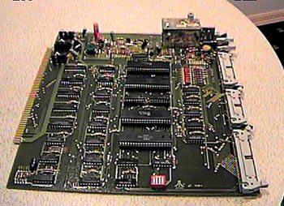

Atari 800 on an S-100 Card

Then a ribbon cable from the
right side interface adapter feed into this S-100 bus interface card which
is essentially an Atari 800 on a card (well sorta). The card
contains a PIA, POKEY, CTIA or GTIA and ANTIC chips. These
boards were used in Crememco S-100 systems (If you wanted to find the 2nd
largest source of Crememco equipment you'd come to Atari, they had hundreds
upon hundreds of them, the 1st largest source would have been Crememco
itself). These boards were used early on for writing new software
for the Atari 400/800 systems.